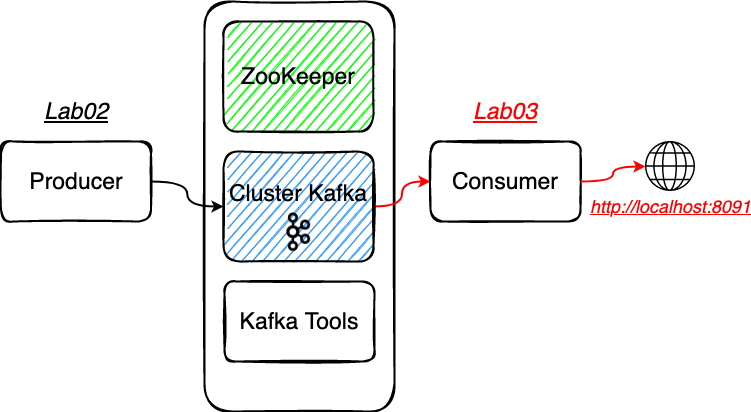
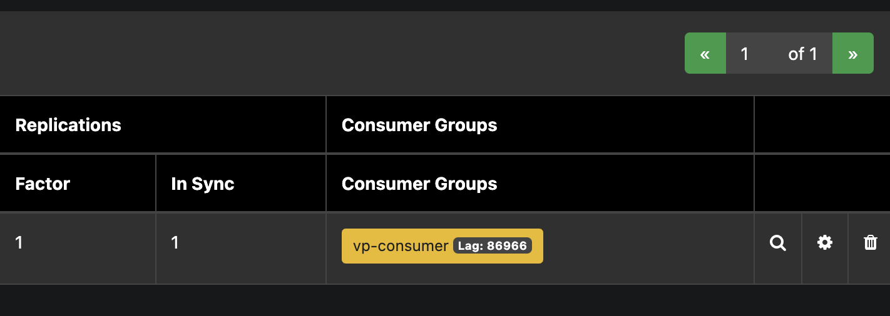

# Lab03 - Consumer
# Rappel

# Préparer le projet
⚠️ Checkout de la branche
step03⚠️.Se placer dans le répertoire
Lab03-consumer
# Un peu de code
Au sein de ce lab nous utilisons spring-kafka (opens new window) pour dialoguer avec Kafka au sein de l'écosystème Spring Boot.
Nous allons découvrir en substance, comment recevoir / consommer un message à l'aide de Spring Kafka. Pour plus de documentations : https://docs.spring.io/spring-kafka/reference/html/#receiving-messages (opens new window)
En effet pour consommer un message vous disposez de plusieurs façons de faire avec Spring Kafka:
- en utilisant
un
Consumerhttps://kafka.apache.org/26/javadoc/index.html?org/apache/kafka/clients/consumer/KafkaConsumer.html (opens new window) - en utilisant une annotation listener (pour masquer une certaine
complexité)
KafkaListenerhttps://docs.spring.io/spring-kafka/api/org/springframework/kafka/annotation/KafkaListener.html (opens new window)
- en utilisant
un
# Utilisation de l'API Consumer
Explorer le projet Spring Boot
Lab03-consumer- La configuration présente dans le fichier
application.properties - L'auto-configuration de
ConsumerFactory<String, String>
- La configuration présente dans le fichier
Compléter la méthode
KafkaRestConsumer#consume()
Indices:
- create consumer
- consumer close
- subscribe on topic
- poll and for each
- send from emitter
- close again
# Utilisation de l'annotation KafkaListener
Annotation
@KafkaListener- Le
@KafkaListenerest une annotation pour désigner une méthode comme écouteur/consumer.
- Le
Principe de Dead-Letter Topic (DLT)
- Vous pouvez configurer un handler (ex :
SeekToCurrentErrorHandler) avec un récupérateur d'enregistrements lorsque le nombre maximal d'échecs est atteint pour un record - Spring-Kafka fournit également le
DeadLetterPublishingRecoverer, qui publie le message d'échec dans un autre topic - cf. KafkaConfigListener
- Vous pouvez configurer un handler (ex :
Pour utiliser l'annotation
@KafkaListeneret le principe de Dead-Letter Topic, il faut activer le profil Springlistener, le listener sur le topicvehicle-positionsva générer une exception sur tous les records ayant un offset pair, pour rediriger ce record sur une DLTvehicle-positions.DLT.
# Démarrer votre application en local
Jouer avec le
wait, vérifier le lag dans akhq, afficher le topic__consumer_offsetPour builder et démarrer le conteneur
docker build -t vp-consumer .
docker run --name vp-consumer --network=tz-kafka-network -d vp-consumer
# Démarrer votre application en local
- Il s'agit d'un projet Maven qui dispose d'un wrapper
mvnwet du pluginspring-boot-maven-plugin, vous pouvez démarrer votre application spring en local à l'aide de la commande suivante :
Se placer dans le bon répertoire
Lab03-consumer
./mvnw spring-boot:run
- Visualiser la consommation des messages sur l'url suivante : http://localhost:8091 (opens new window)
- Que voyez-vous sur l'IHM ?
- Observez AKHQ http://akhq:8080/ (opens new window) ?
- Que représente le lag dans AKHQ ?

# Packager votre application avec Docker
- Pour builder et démarrer le conteneur
Se placer dans le bon répertoire
Lab03-consumer
docker build -t vp-consumer .
docker run --name vp-consumer --network=tz-kafka-network -p 8091:8091 -d vp-consumer
- Pour démarrer votre conteneur avec le profile
listener
docker run --name vp-consumer --network=tz-kafka-network -p 8091:8091 -e "SPRING_PROFILES_ACTIVE=listener" -d vp-consumer
Supprimer le conteneur si déjà présent
docker container stop vp-consumer docker container rm vp-consumer
# Solution
Vous vous doutez que pour disposer des solutions de la step03, il vous suffit de️ checkout la branche step04 😊